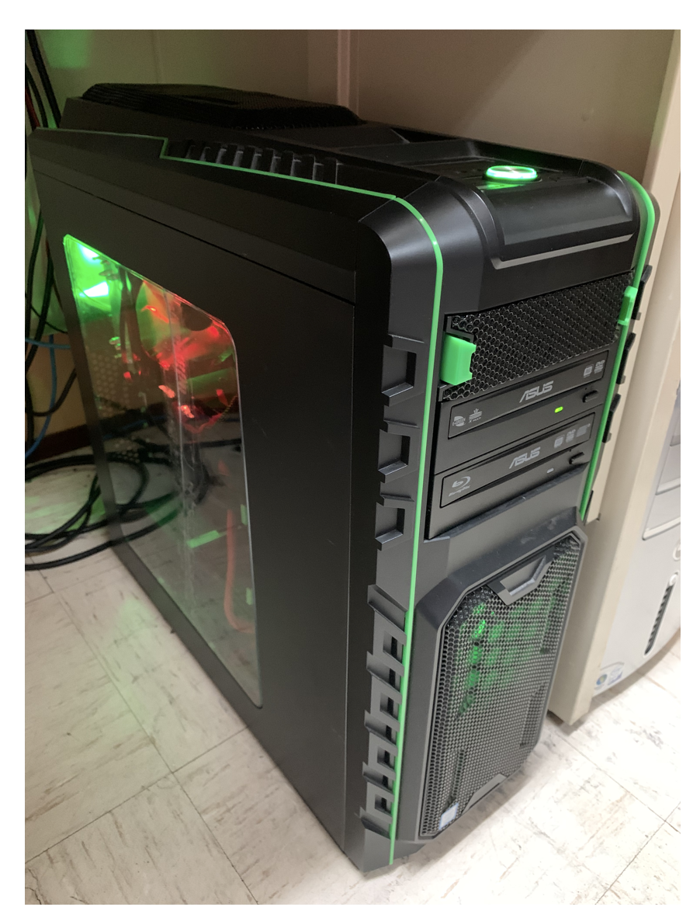
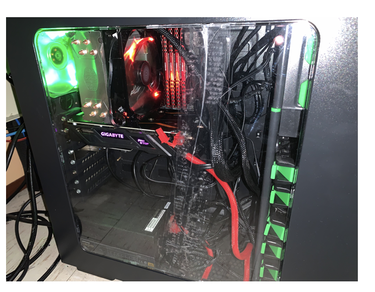

Section 4: "The Present Day"
It has been three years since I finished the Saturn, and just like myself, it has experienced many changes. It has received upgrades such as M.2 SSD's, new hard drives, more storage, and even new software and games. However, in 2020, Saturn suffered significant damage when a power surge destroyed its motherboard and was forced to operate using a damaged spare. It lost usage after that due to its instability but after a while of planning and finally earning enough cash to do so, I upgraded the CPU to an Intel Core i7-8700K CPU and a new ASUS PRIME B360M-A Motherboard. It is not nearly as fancy as my old MSI board, but it appears to be far more robust and compact and will handle more than the tasks I need to perform. With these new repairs, the Saturn has become even faster and more powerful than before, and while it is a bit outdated when compared to most PC's that exist in 2021, it is still, an intelligent machine and one day will become even more capable when I buy an upgraded GPU to replace my 1050ti. However, Until then, it shall remain in its current state, and will continue to be my first major accomplishment in my educational pursuits and dreams.
Thank you for visiting my Website, and I hope you enjoyed viewing this little documentary of my machine!


Oh, and one more thing...Click to Return to mainpage!
Main Page